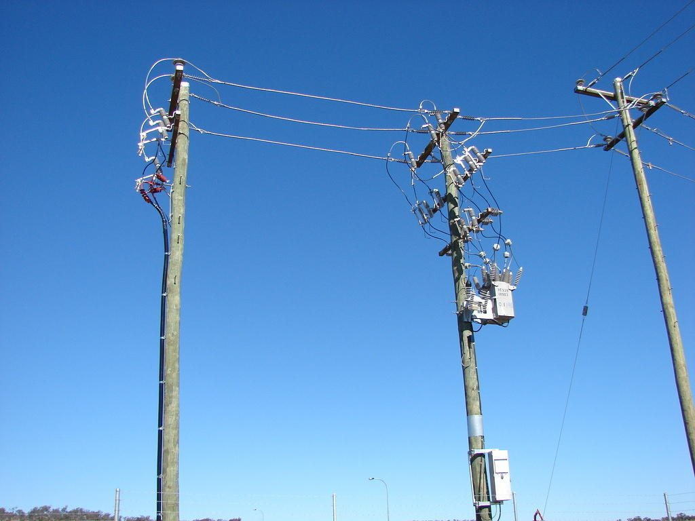
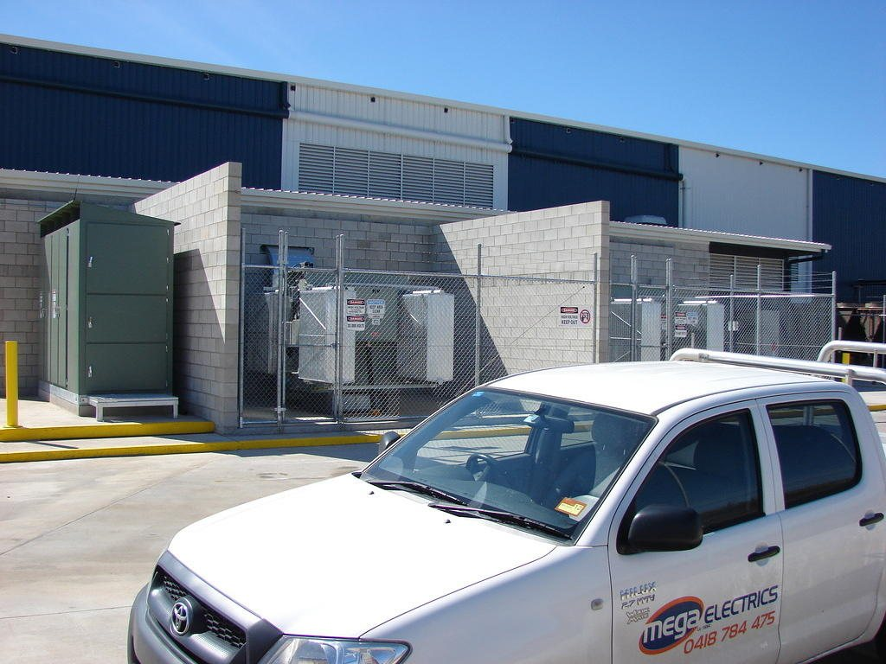

Councils and roads
Public works, from substations to street lights.
What we do here
Our work in this sector
- 11 kV substation works
- Street and road lighting
- Switchboards, cable ladder and variable speed drives
- Hazardous-area equipment
- Fibre for traffic control
Where we have done itBrisbane City Council's bitumen bulk storage facility at the Port of Brisbane; road works power and lighting on Clem7.

Services
Services used in this sector
ServiceHigh voltageNationally accredited HV cable jointers, experienced up to and including 33 kV, and HV commissioning technicians equipped for cable fault location and protection systems.→ServiceTunnelling and infrastructureElectrical work for tunnel construction, and assembly and maintenance of the machines that do the digging.→ServiceFibre optics and dataNationally accredited fibre and communications technicians, for single-mode and multi-mode installation and testing.→ServiceSwitchboards and controlBuilt in our own dedicated switchboard workshop, so quality and timing stay in our hands.→
Projects
Projects in this sector


Talk to the people who will do the work.
One number for every branch, answered day and night.